来源：https://jngw0yct19.feishu.cn/docx/GUHld91qQobms8x35tbcOUlSnZb
打造个人IP，通过影响力变现，是当下这个自媒体时代主流的赚钱方式！
注意，有数据，有案例，有干货，万字长文预警！！！
大家好，我是不讲李，目前在做项目拆解类的账号，可以简单理解为”短视频“版的生财有术。
如果圈友们有什么内容流量方面的问题，我们可以随时探讨交流，在没做这个IP之前，我就做过上亿的流量，交个朋友你肯定不亏哈~
目前我已累计帮助1000+群友，从0-1做出一个能变现的账号。
靠着这个”不讲李“这个IP，我也在10个月的时间里，累计变现了7位数。
百万的变现量级是不还挺诱人？
但说句实话，真的少了~
就凭我最早期的爆发性流量，单日私域进量是过千的，如果“割韭菜”的话，可能不到2个月就变现百万了，但是我想做一件长期的事业，所以对IP特别的爱惜。
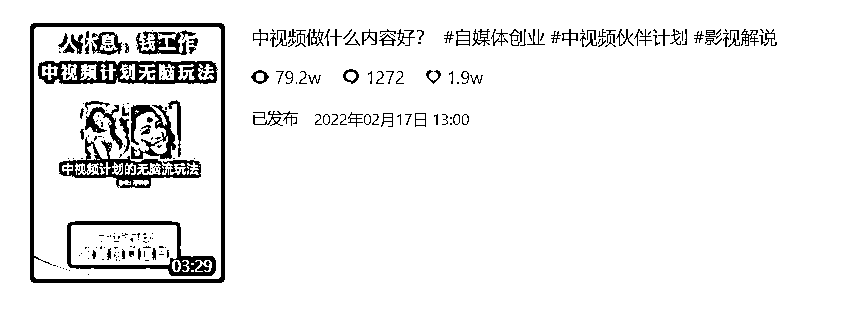
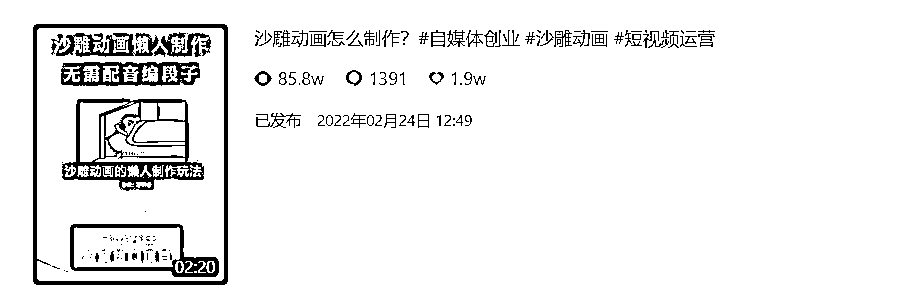
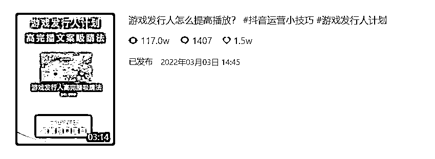
通过这些图片，你可以感受下我早期的流量，对于我这类细分赛道来说，“百万播放”是很难做到的。
泛娱乐赛道可以轻松轻松破百万播放，可能小姐姐跳个舞就行了，但“变现能力”和“账号价值”完全没有可比性。
收益就不晒了，会员日刚过，容易让新圈友心态浮躁，还是希望大家能静下心来看文字，汲取到对自己有帮助的部分，尽快去落地实操，跑通流量变现闭环。
抖音/公众号：不讲李的笔记
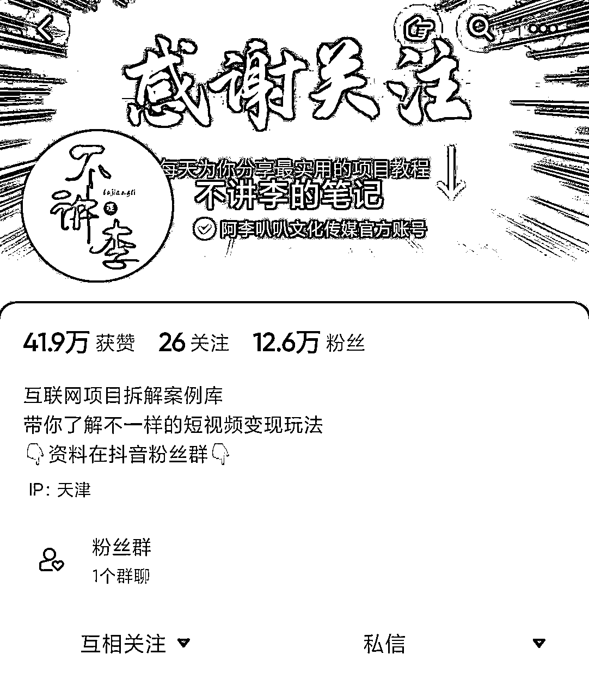
“不讲李的笔记”这个号从搭建的那天起，我就没投过一分钱“dou+”
单纯靠内容质量来获取流量，拼一己之力战胜了可恶，可气，可憎的推荐算法。
而这样来的粉丝几乎是最纯粹，因为“不讲李”这个IP来的，而不是买来的关注狂魔。
但流量投放肯定是运营的必要手段，这点大家不用学我~
其实我不投放的原因，更多是当时想证明自己的运营能力，凭什么给公司打造账号能变现千万，轮到我自己就做不起来？
基于这个强烈的执念，我在100多天里，持续不断的调整内容，分析总结，终于跑出了一条专属我的“最佳流量模型”。
“不讲李的笔记”也有幸成为了后来者的首选对标
因为我这套方式会更适合新人”提效降本“，一个人就能快速的通过内容获取流量，便于复制模仿。
回归主题，相信很多圈友都想做个人IP，但是有很多理由阻挡自己踏出第一步，比如恐惧镜头、说话磕巴、场景不搭，缺乏内容等。
嗯，没错，这些都是我之前的问题~
下面我就分享一下如何在不出镜的情况下，打造一个能变现的个人IP账号。
一、如何打造不出镜个人IP
1.到底什么是个人IP
2.普通人适合打造什么IP
3.能对标的不出镜IP有哪些
二、运营抖音的核心秘诀
1.模仿低粉爆款起号最快
2.寻找受众最广核心需求
3.私域的引流与防封指南
三、PPT视频制作方式
1.选题+文案+配音
2.短视频万能内容框架
3.制作PPT导出混剪
四、知识付费主流变现方式
1.卖课程优劣势
2.卖咨询优劣势
3.卖圈子优劣势
在我看来就是你在别人眼中的标签，当我们提到某个人时，就知道他是哪个领域的高手！
比如：
周星驰——喜剧天才
成 龙——功夫巨星
亦 仁——生财有术创始人
杨 涛——生财全能大师兄
某个领域的高手？
【我这么平庸，估计是不可能成为IP了吧，放弃好了】
不，不，不，千万别着急否定自己的可能性。
【如果伞兵永远不从飞机上跳下去，那么他永远治愈不好恐高症】
理想的路总是为有信心的人预备着，你的“自我否定”，很难“激励”你真正进步！
何况抖音是去中心化的，新的血液一定会获得更多的流量，曾经的“超级网红”你有多久没刷到过了？
只要你还没有丢掉持续学习的能力，那么每个细分领域或者你所做的行业，都值得你通过塑造个人IP再做一遍。
以下是我观察了上百位”素人博主“后，总结出的两个最适合普通人的【个人IP成长路径】
不需要懂运营，不需要形象好，即使不出镜，也可以让你成为一个大家所喜爱的IP。
1.有一技之长的IP
比如你做过10年的房产中介，买房需要避的坑你特别清楚，这个就可以作为一种视频内容发出来，帮助大家解决生活中实实在在遇到的问题，怎么过户给子女最划算？怎么一眼看出小区物业品质等。
我们不去讲那些宏观经济层面，听得见、摸不着的东西，只讲最接地气的事，生活中普遍遇到的问题，这是人人都能感受过，并且你也能输出观点的事。
因为你讲的专业，因为你有10年的履历背书，因为你说的都是能切实帮助到用户的，所以他们必然会被你圈粉。
甚至是线下付费咨询，又因为你得到了大量的粉丝拥簇，开发商也会找到你合作，希望依靠你的个人品牌影响力，帮助他进行销售转化。
我们经常感叹人生没有机会，其实很多人缺少的不是”机会“，而是”能力“。
尤其自媒体时代，拥有一技之长远胜数套房 ，个人IP还会为你所在领域的发展大大加分。
2.资源整合性ip
再比如你是一个爱美的女大学生，虽然你生活阅历和经济条件不够，但这并不影响你成为一个美妆博主。
你去把国货的品牌通过小红书、抖音、百度等渠道都搜出来，把他们的优缺点挨个记录在表格里，然后通过出镜口播的形式，给他们做一个优略势的对比就好了。
当有了粉丝后，甚至会有厂家给你寄送小样，这样的视频展现效果会更真实，抖音和小红书商有很多这样的博主。
如果你不知道自己的特长是什么，那么选择帮助别人节省时间，避坑避险吧。
渐渐这个领域也会变成你的一技之长，稀有的爆款视频还会时常回馈你的善意。
其实这个事的底层逻辑很简单，就是两个字——盘点。
互联网讲究的开放分享精神，很多人对某一事物感到陌生，甚至是无从下手，本质上就是不会去找到正确的信息，但这些信息并没有被隐藏，你去帮他们把这些信息搜集出来做一个盘点，就能在自媒体平台收获大量的粉丝。
这两个例子就是简单给大家解释下，普通人想要打造IP的基本路径！
无论你是否拥有行业知识，你看是不是都能通过后天学习变成行业专家。
包括我自己也是一样，我擅长的本是新媒体的内容运营策划，而不是做互联网项目，但这不影响我把项目拆解类视频做的很好，因为它属于后者。
刘润老师说过：顶尖高手都是极致的利他者，他们总是想方设法给，而不是想方设法拿。
为他人提供服务，从而创造价值，他们就会愿意从自己收获的价值里，分一部分回馈你，比如点个关注、点个红心，从而成就了一个IP的诞生，并让你赚到了钱。
因为做IP最大的势能就在于，能降低交易的决策成本，而赚钱的前提则是交易。
抖音是目前流量最大的平台，也是大家最认可最熟悉的平台，所以我建议大家以抖音为主打造个人IP。
说起做抖音，就必然离不开找对标账号，目的只有一个，降低自己的试错成本，别人成功过，你就全力去干必然有结果。
其实能做的赛道还挺多的，就比如做PPT项目拆解这个事，换个行业一样能获取流量。
下面是我总结的9个不用出镜，只需要漏声音的账号类型（视频可以播放）。
你可以每天推荐一个自媒体工具，这是我们做的小号“李性分析工作室”，大家可以关注一下。
展现形式：内容制作很简单，就是视频素材混剪，录屏介绍一款软件的功能
变现方式：社群、卖工具、商单广告、知识付费
账号定位：人情事故，商业认知
展现形式：视频素材混剪，介绍职场、商场上的厚黑学，喜欢的人还挺多
变现方式：社群、商单、咨询、流量收益、知识付费
账号定位：适合各类短视频IP起号
展现形式：用软件生成虚拟头像，口播介绍短视频玩法
变现方式：商单、社群、卖工具、知识付费
账号定位：属成长类IP，3分钟带你读一本书
展现形式：简笔画形式，介绍一本书核心内容，手绘软件就能换搞定，人工绘画更佳
变现方式：商单、读书营、流量收益、知识付费
账号定位：可以从技术、趣味、盘点的角度出发
展现形式：游戏录屏，后期写脚本配音视频，适合年轻人的账号类型
变现方式：商单、收徒、陪玩、流量收益
账号定位：记录工作、生活的场景
展现形式：利用不同角度、空镜，第一视角混剪视频
变现方式：商单、带货、流量收益
账号定位：所有知识输出类均适合PPT
展现形式：以PPT形式拆解项目、流量、内容、制作、变现等环节
变现方式：社群、商单、资源合作、知识付费
账号定位：思维逻辑、心理效应
展现形式：以PPT的形式，输出思考、思维、思想的知识模型
变现方式：商单、流量收益、知识付费、成长社群
账号定位：单身男性如何追求女性
展现形式：同样PPT的内容结构，抛出问题，分析原因，解决问题
变现方式：商单、咨询、线下、知识付费
以上这些行业，肯定有一款是适合你，但并不代表只有这些赛道可以做，顺便说一句，这里面除了我，人家都是几十、几百万的粉丝体量。
这个板块应该是大家最感兴趣的，因为抖音起号真的很难，属于最难运营的平台没有之一！
你应该也看了很多的短视频课程，学了很多的运营技巧，但就是死活打不开短视频的”流量密码“。
这里给你分享一个非常有效的方法，是我自己总结的经验，其实很早就在抖音就分享过，相信并熟练运用的人，八成都能涨粉过万。
找不到原图，水印凑合看下
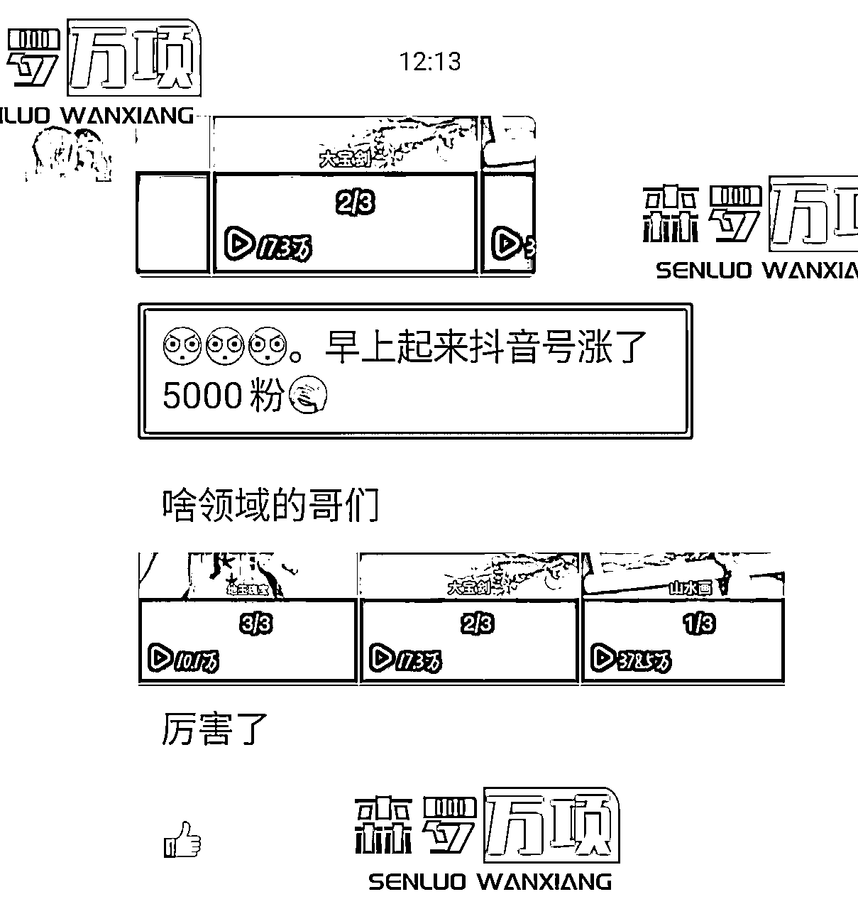
简单来说，就是对标最近新起的账号，尤其是那种1-2万粉丝的最好。
大家都是新号起步，粉丝没有粘性，主页视频也没什么播放量，制作也简单，就靠着一条或几条涨了几万粉，你蹭着人家视频话题，大概率也能爆发一波，顺利打上账号标签，获得稳定流量。
我们在教学员起不同领域的账号时，用的都是这套“低粉爆款”理论，屡试不爽，但是你也要保证作品的基础质量才行，不然什么技巧也是徒劳。
怎么寻找对标账号就不展开讲了，抖音上说的方法基本没问题，就是一个不断搜集、整理、分析的过程。
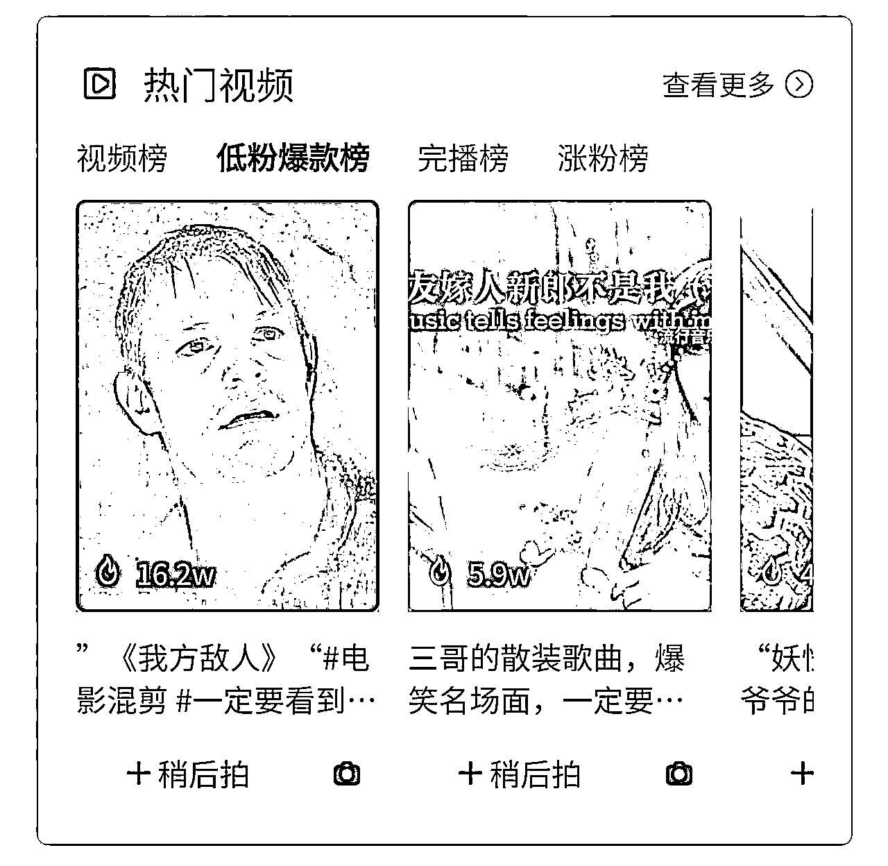
我自己会额外准备一个手机，大批量关注和完播已知的相似博主，之后抖音会根据算法不断的推荐类似账号，这样既可以找选题，也方便找对标账号。
经过一年的时间，现在已经出现了很多项目拆解类的账号，有人纯抄袭，有人在模仿，都是从公域转私域进行变现，用户也慢慢接受了这种内容形式。
但模仿的只能是展现形式，如果连内容都抄袭，那这样的IP注定走不长远，任何平台也不会欢迎这样的内容，而且当他刷到你的时候，一定也会刷到我们，粉丝也会有自己的辨别能力。
只有不断创造价值，推陈出新，打出差异化，才是打造IP影响力最佳姿势。
这是第一个能起号的核心，去寻找行业内”低粉爆款“账号，在抖音上的小成功才是成功之母。
这个世界上聪明人很多，作为新手我们没必要什么都自己创新。
光找到低粉爆款的对标账号还远远不够，内容才是核心竞争力，我初期流量也一直起不来，PPT对比出镜来说确实缺乏表现力，完播数据特别差。
难道是我的判断有误吗？这种账号是运气产物，并不可复制？
我再次观察了大量对标账号，统计了所有的视频数据，最后终于让我找到了流量密码——影视解说。
影视号的受众群体特别广泛，刷抖音的用户大多以娱乐为主，很多人午餐时都会搜几个影视解说下饭，另外但凡有人动了靠抖音变现的心，大部分想到的都是做影视解说。
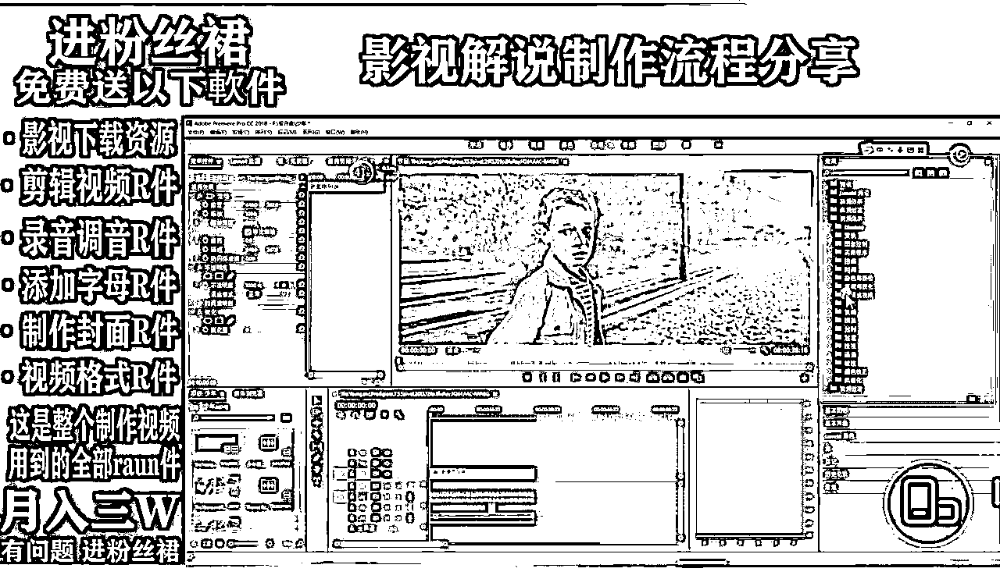
于是我就再度深挖，混到影视解说的交流群，观察他们每天的聊天话题，看看他们还有什么痛点是没有被解决的。
最终发现他们做影视解说的也很卷，甚至很多人已经不想做影视号了，想换赛道但不知道换什么，还有人始终过不去中视频的审核，不知道怎么提高收益等问题。
那我就以此为创作话题，开始了我的中视频运营拆解，结果一发入魂，一条视频涨粉8000+，接着就这话题连更3天，直接就打上了账号标签，流量至此稳定了下来。
第一条爆款
这是第二个起号的核心，解答当下受众最广的核心需求，【给用户在现状和梦想之间搭座搭建一座桥梁】
在当时的现状下，中视频的玩家是最多的，所以我的中视频系列教程才能成为爆款。
我为什么要转到私域而不在抖音卖课呢？
很多博主都迷信粉丝量，播放量，我不是特别看中，我盯得指标只有一个，就是私域流量的增长。
抖音的粉丝说白了并不完全是你的，一个不小心就给你限流了，或者封禁，你能带走吗？我都被封2个号。
但是私域不一样，它永远是你的，很多话都可以敞开说，关键能随时触达用户，无论你做营销还是立人设，都没有问题，只要你能传递正确有价值的信息，他们会跟随你很久很久。
目前我的很多资料钩子，文案内容，案例素材什么的，都是给大家免费使用的，视频也从来不加水印，随便各平台搬运。
领资料也不用加客服，省的不好意思还得换马甲，你直接回复关键词就能拿走。
免费资料已经29页了
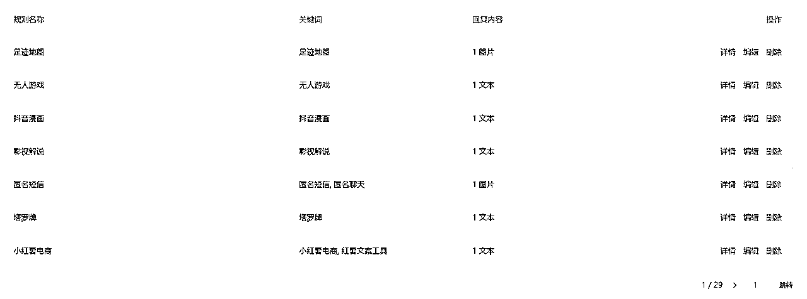
这么看是不是觉得我挺大方的？
原因很简单：一个赛道的生态需要大家共建。
一条街上需要有各式各样的门店，需求才能被调动，市场才会热闹，大家才都有钱赚。
而且这玩意也根本禁不掉，费那个心还不如打打游戏，另外对自身其实也是一种赋能。
在每天的私域进量里，千奇百怪的的什么渠道都有，盗版课的，谋士的，youtube，知乎的，B站的，尤其B站那个哥们，我现在都不知道他是谁，直接用我的名字，搬运我的视频为我倒流，雷锋啊~
但如何引流也是个大问题，相信你也尝试过很多办法，但不是禁言就是封号，时常崩溃ing~
下面就给大家分享下，我用了一年的”稳定引流“方式，包括渠道搭建也会全盘托出。
我的内容引流方式：
内容：抓人的开场话题+项目流程讲解+素材的混剪/PPT图片。
引流：找到用户最大痛点—结尾设置关键词钩子—引导公众号回复领取部分—加客服领取完整版资料。
工具：我用的是商加加，大家到官网加客服咨询就好，他们会帮你搭建引流卡片，比其他方式都要稳。
商加加外链：https://www.shangjiajia.com/
举个栗子：
我拆解了中视频的玩法，这里用户最大的痛点肯定是素材和文案，那钩子就可以是“视频素材”或“文案模板”，用户到公众号回复关键词，先获取了文案资料。
但是只给其中一个，这里可以再留一句话。
“视频素材太丰富，上传后总被和谐，请添加不讲李助理领取，扫码添加再免费赠送32个小项目玩法”。
这样他就被引到了微信，那如果有的资料很简单，没办法分段领取，就再找其他资料来引流。
至于为什么引到到公众号，而不是直接到微信，这是我的历史遗留问题。
开始一个人做就一个微信号，很容易添加异常，也没想到能马上做起来，就用公众号充当了中转站的功能，时间久了，用户被市场教育出了习惯，就一直没改变。
其实还是直接加微信更好，这点不用学我们，但公众号有2点好处，一个是用户获取资料方便，二是文章比视频更容易立私域人设。
防封指南：
抖音蓝V的抗风险能力超乎你的想象，但也不绝对，只要视频不是太嚣张都没事。
抖音群我一般禁言，担心敏感话题出现，引流就是自己转发卡片，不说任何的引导话术。
用卡片跳转聪明人自己会过来找你，不会的说明手机也没玩明白，过来以后也是个麻烦。
抖音上很多人私信我说，李哥你的PPT制作用的什么软件，剪辑有没有什么秘诀，包括前边”木子田“兄弟分享时，也有人评论在问。
我其实有点不太明白，这块的难点在哪里，就是把一个PPT录制下来，然后录音解说，真的没了。
可能是有些人办公软件用的不熟练，不知道PPT怎么做吧，这个建议百度一下解决。
下面给大家演示一下我视频的制作顺序~
去抖音刷刷最近大家比较关注的项目，点赞高的都收藏一下，但其实生财的风向标和文章就是最好的选题方向，生财的高手实在太多了，对于赚钱项目的敏感度，远超抖音上某些大V博主。
就拿之前很火的短剧推广来举例，无论是在抖音还是什么平台，当你看到这些项目信息后，就可以去吸收内化成选题，内容可以直接对着PPT口播，也可以写好念稿子。
相信想做不出镜IP的朋友，都是有一些各自的因素，导致出镜困难。
我则是在做“不讲李的笔记”前，一直在给教育公司负责全媒体运营，让我直接口播属实是难为自己了，所以我会习惯内容先写出来在录音，这样也方便去调整内容的结构。
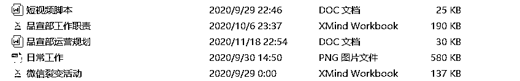
第一段怎么说吸睛，什么地方该让用户停留，什么时候该点赞，什么时候要评论，我心里都有数，剩下的就是把看到的内容信息，转变成自己的语言体系，清晰明了的把这个项目机会说出来就好。
我是直接自己录音的，你也可以选择好一点的平台用AI配音，这里配音软件没什么可推荐的，贵的就是好的，内容才是王道。
【爆点前置】+【项目简述/项目优势】+【流量来源/内容形式】+【变现方式/项目评价】+【钩子引流】
【爆点前置】
视频号带货新手，7 天涨粉10W实操分享
3条视频播放破百万，变现5W的冷门玩法
不为播放量焦虑，分享一个只要付出就有回报的项目
最简单的方式，就是去搜集生财的的高赞标题，找到他们的框架规律，你用到短视频上一样有效，标题党无论在图文还是短视频时代都是万能的。
目标用户既然想通过短视频变现，那么你只需要把他们最关心的点，放到开头就能吸引到他们，比如付出要少，流量要大，变现要猛，涨粉要快，无非就是这些。
但这种方式吸引来的一定是急功近利的小白居多，所以不要频繁的去用这类做开头，会对之后的账号变现以及粉丝模型造成影响。
打造IP的第一步，就是要学会劝退一部分人，最好远离他们，只有学会拒绝客户，才能找到更多的客户，让生意更好做！
【项目简述/项目优势】
分享项目的时候，要从用户的角度带入讲解，很多项目你以为大家都清楚了，其实更多的人是不知情的，所以项目介绍这个环节必不可少。
如果项目很简单一句话就能说明白，那么可以加入项目的优势，有理有据的列出123点，也是一个不错的吸引人的方式。
范文
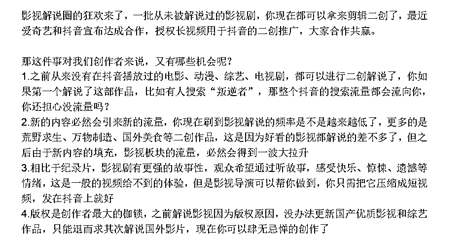
【流量来源/内容形式】+【变现方式/项目评价】
项目阐述完毕后，接下来就是两个最重要的核心，流量来源和变现方式，任何项目或者账号，缺少一个都无法完成变现的闭环，这也是账号本身值得被关注，能吸引到粉丝的最大诱因。
大多数项目的流量来源都是短视频，那么你需要做的就是拆解一个好的案例，比如说小说推文，找到一个做的好的标杆账号，带着大家手把手的做出来，或者分析他的内容展现形式——解压视频+小说原文。
解压的优势在哪？
小说为什么会吸引人？
为什么小说搭配解压有奇效？
解答了这些问题后，观众就会清楚，为什么做这样的内容能获得流量？
而这种碎片化的获得感会使人上瘾，给大脑带来我在努力的错觉，必须点赞收藏一下。
范文
接着就来到了变现环节
大多数项目的变现方式几乎是通用的，我给大家做一个总结：
1.流量收益：最常见的就是中视频计划，其他平台也有类似激励计划
2.私域变现：不方便公域变现的，可以转到微信上做成交，比如减肥、情感之类的
3.卖产品：短视频的小黄车，直播间的链接都可以，抖音的电商体系已经比较完善了
4.接广告：1万粉丝就可以加入星图，如果你是垂直账号，也会有人私信找你合作
5.做培训：当你熟悉了某个项目的运营逻辑后，就可以把你的经验当做一个产品进行出售
6.CPA/CPS：比如说软件的下载安装，前者是走点击数量、后者是走使用质量
灵活套用以上的变现方式，没有你拆解不了的项目，哪怕不完全也基本够用了，到这里拆解基本就接近尾声了。
当你拆解的项目越多，对粉丝的了解的越多后，你会对项目有一个自己的判断，这时可以在结尾加上你自己对项目的评估，或者对粉丝的一些良言忠告。
人同时是理性和感性的动物，但主要是感性动物，用户是能感觉到你在为他着想的，这样就能起到升华主题、强化IP的作用。
人同时是理性和感性的动物，但主要是感性动物，用户是能感觉到你在为他着想的，这样就能起到升华主题、强化IP的作用。
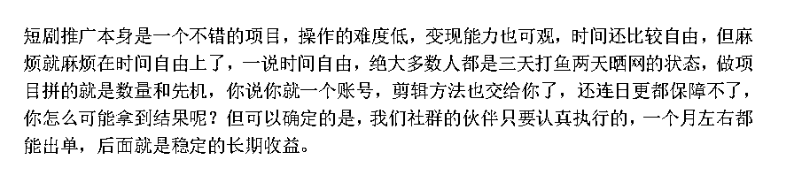
PPT怎么制作我就不教了，也不需要自己原创，找一个好看的模板，直接套着用，更改文字和排版即可。
免费PPT模板：https://www.1ppt.com/tags/499/
如果精力充足，可以每期做一个符合主题的PPT，视频观感极佳，但是找到符合的PPT，再修改PPT太费时间了，所以我选择统一模板，就是图效率快。
后来做项目拆解的朋友，也都统一沿用了我的方式，包括排版也一样。
比如左上角的标题、左文字、右案例、上下两条的标题，包括很多人的PPT底色，都对我做到了像素级的模仿，他们不成功都不可能，因为这是最适合一个人制作的方式。
像素级模仿“不讲李”你也可以
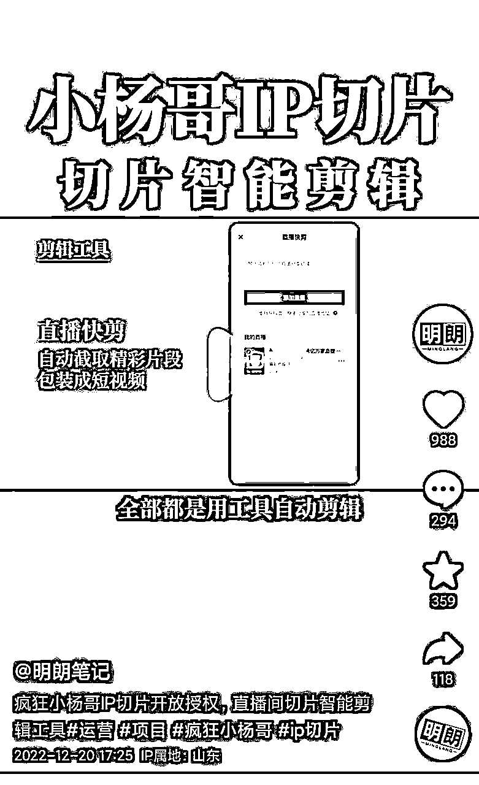
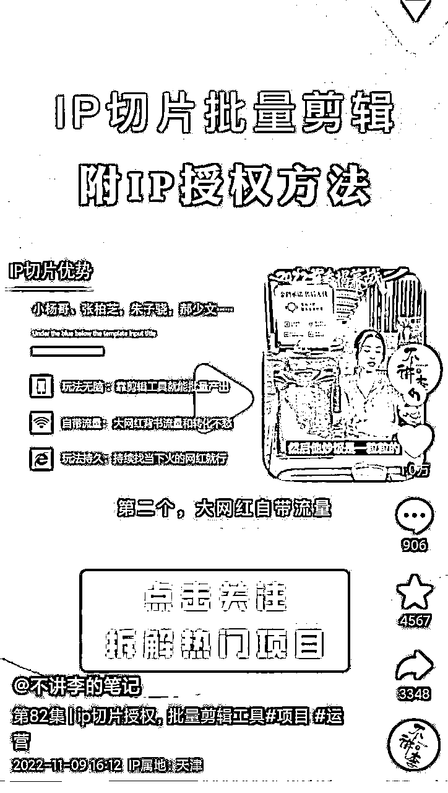
可能有人觉得说是竞争者或者敌对关系，他们在抢我的流量，细心点的朋友，从“发布时间”就能看出来，都是在我之后发的。
去年全网几乎都在追着我的内容走，也算撑起了项目拆解的半壁江山，有粉丝还建议我举报什么的~
不过，我都拦住了，并和他们说，也许别人能引申出来更好的思路，你能免费学到，为什么要举报人家呢？
原本我在互联网上就是一个籍籍无名之辈，现在因为输出的内容还算有点价值，突然能成为了大家的标杆，在无形中还能帮助后来者快速上道，对我来说是一件特别欣慰的事情。
剪辑方面的话，直接把录制好的PPT导入到剪映就可以了，在页面切换的空隙加入转场和音效，可以让视频看起来更加顺畅，其他的素材可以在剪映的素材库找到。
加入混剪素材的目的也是提升观感，包括前边的案例拆解时，我也会把对标视频直接放出来，单纯靠嘴说，去想象，不如直接看案例来的直接。
在抖音不断切换场景，是除了文案外，另一个能持续吸引注意力的小技巧，至此，整个的PPT视频的制作就算完成了。
有了流量，接着就要开始变现了对吧。
一般知识博主的变现路径有3种，卖课程，卖咨询，卖圈子，我分别说下他们的优缺点吧。
很好理解，以录播课的形式帮用户解决具体问题，优点是边际成本很低，你只要研发一套课程，就可以售卖无数次，后续不会再有任何的成本投入。
缺点是一锤子买卖，基本没有售后服务，很容易挨骂，如果客户的问题碰巧课程没有讲到，就会卡在这个环节出不去，如果想要解决，可能还要去买别人的课程来补充知识点。
如果你在某个领域的专业知识特别强，是可以售卖知识服务赚钱的，比如帮助其他人解决专业问题，提供策划方案，具体点的有心理咨询，法律顾问，出国留学咨询等。
做咨询服务适合做高单价，不然后端服务会把你拖累死，人家都是冲着你来的，而你只有24小时的时间，根本不够分。
比如项目交流圈，自媒体交流圈等，相对于卖产品和服务，卖圈子是一个更高级、更持久、变现更加多样的盈利方式，也是此刻的我正在做的事，一个好的圈子，有资源，有机会，有各种可能性，它的优势是人脉+商机。
缺点是时间的拉长，会弱化交付的价值，很容易变成冷群，这块原因我就不展开讲了，也不建议新手选择社群做交付产品，真的很难。
我们可以算一笔账：
假设私域每日进量200-500粉，一个月私域就是6000-15000粉，
如果你是卖社群的，单价500，按5%转化率算，一个月就是15W-37.5W
如果你是卖课程的，单价2000，按2%转化率算，一个月就是24W-60W
高客单咨询没做过，我就不太清楚了~
以上数值是指你把公域全部导入到微信，还有能力做好营销转化的前提下，如果从公众号再加微信，会损失至少一半的用户。
无论你是卖课、做咨询还是卖圈子，一定不要过度承诺，但要做到超值交付，言必行、行必果，一旦他们意识到你是超值交付的，就会更加的信赖你，我这边多次付费都是常事。
你想吧，一群人打心底里认可你，你还能缺变现方式吗？
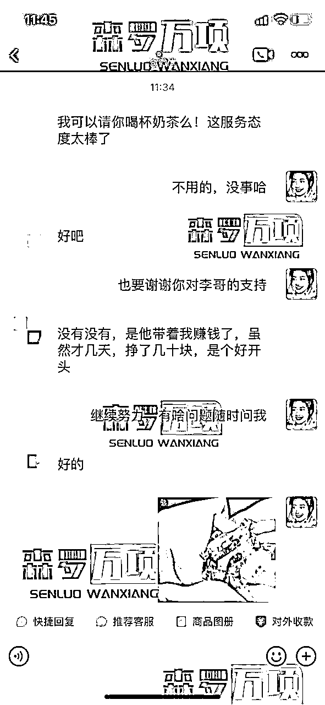
打造不出镜的个人IP账号，只需要你在一个领域很专精或者很热爱，比如你是很懂儿童教育、认知思维、心理效应、喜欢去观察一些有趣的账号。
ok，不需要你布置服化道场，不用你会表演，每天工作3-5个小时，套个PPT模板就能做视频，根本不需要什么天赋。
而且以大多数人努力程度，根本没到拼天赋的时候，你看PPT+其他赛道，很多人就懒得去想不是吗？
普通人想要打造个人IP，我自认为最核心的就两点【热爱+擅长】
因为只有热爱，才能有源源不断的动力，支撑你更有力量地前进。
但光有热爱还不行，因为一个人的精力有限，能量状态有限，还要把自己擅长的事情找到。
做擅长的事情，才会持久，做热爱的事情，才会滋养自己，同时带给他人力量，不擅长的事情做多了，对自己来说就是一种消耗。
比如很多人其实不擅长做出镜口播，但是为了做流量而天天拍视频，还搞直播，最后把自己弄得身心疲惫。
想要活出自己，还想站着把钱挣了，就是做自己热爱且擅长的事情，照亮自己，照亮他人，这样的IP才是最真实且舒服的状态。
那么，你热爱的事是什么，最擅长什么呢？
或者你就对怎么赚钱感兴趣，喜欢研究别人怎么变现，那做一个我这样的账号行不行呢？
我们可以一起聊一聊哈，有问必回~~
教育行业出身的我，还挺擅长挖掘“孩子们”的优势点的！
最后感谢生财有术，感谢圈友们的耐心阅览。